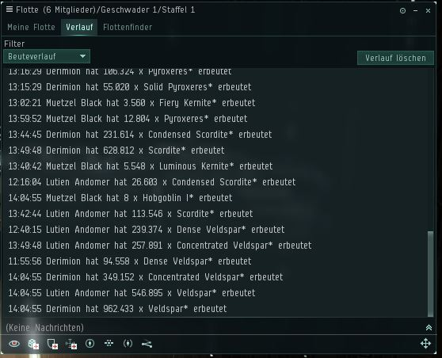

Willkommen zum Erztracker der Profire Inc.. Ziel des Tools ist das Auslesen der Informationen, die EVE Online innerhalb eines Flotten-Verlaufs trackt. Das Tracking beginnt, wenn man der Flotte beitritt. Die Auswertung ist also unabhängig davon, ob davor oder danach (außerhalb der Flotte) bereits gesammelt wurde. Das Flottenlog ist unter dem Hauptmenü (das große E in der Leiste von EVE) unter "SOZIAL" und "FLOTTE" zu finden und sieht so aus:

In dieser Übersicht alle Zeilen mit shift + Klick auswählen, dann in
die Zwischenablage kopieren. Anschließend hier in das rote Feld
einfügen und Knopf drücken. Die Ergebnisse werden dann in einzelnen
Kacheln darunter angezeigt und können für Flottenmitglieder einzeln
kopiert und bei
Evepraisal.com
eingegeben werden, um den Wert der Erze zu bekommen.
Achtung: Die maximale Menge eines Erzes darf die Grenze von 2
147 483 647 nicht überschreiten, da da das Integer Limit liegt.
Neu! Der Wert der Erze kann jetzt automatisch von Evepraisal
geholt werden. Hierfür einfach auf den Knopf mit der Aufschrift
"Wert" klicken wenn die Kacheln geladen sind.
| Verkaufsort auswählen | |
|---|---|